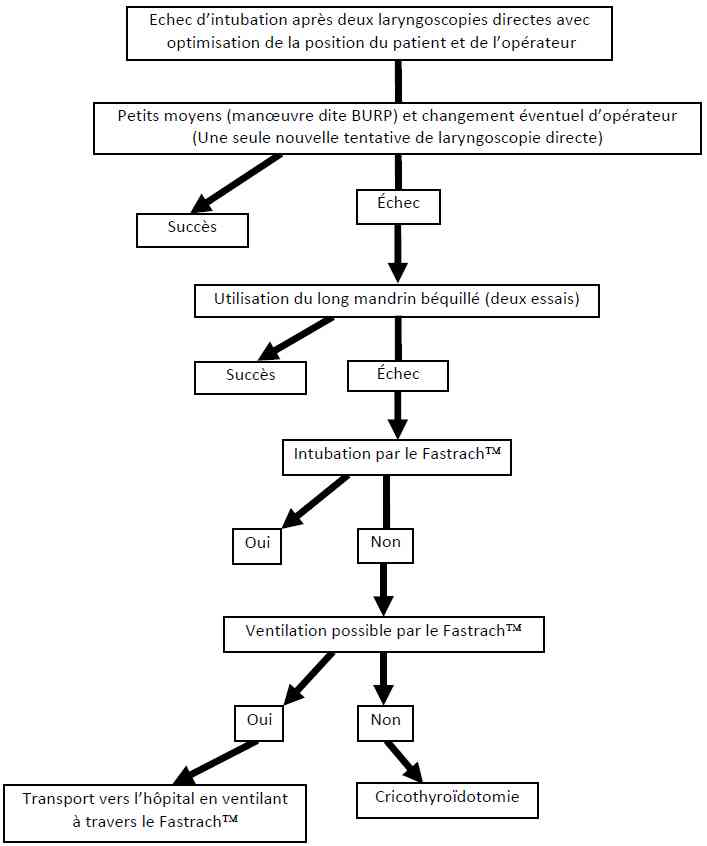

Bienvenue Sur Medical Education
Intubation en situation d'urgence
AdulteSpécialité : orl /
Points importants
- L’intubation orotrachéale est la technique de référence pour le contrôle des voies aériennes en situation d’urgence
- En dehors de l’arrêt cardiaque, l’intubation trachéale doit être réalisée sur un patient sédaté selon la technique d’intubation en séquence rapide ou ISR
- Principaux risques de l’intubation en situation d’urgence : inhalation pulmonaire et désaturation artérielle
- L’intubation difficile est rarement prévisible en situation d’urgence
- La prise en charge de l’intubation difficile repose sur l’utilisation de techniques alternatives efficaces qui doivent être utilisées selon un algorithme précis
Contexte de l’intubation difficile
- L’incidence de l’intubation difficile en médecine d’urgence est classiquement considérée comme élevée aux alentours de 15%.
- Cette incidence est probablement beaucoup plus proche de 8% lorsque les techniques d’induction en séquence rapide sont utilisées en routine
- Des facteurs environnementaux tels que la position fréquente des patients allongés sur le sol expliquent la difficulté spécifique de l’intubation en médecine d’urgence préhospitalière
Indications
- Réanimation cardio-pulmonaire spécialisée
- Détresse neurologique d’origine toxique, traumatique, neurovasculaire et état de mal épileptique
- Détresse hémodynamique
- Détresse respiratoire
Dépistage d’une intubation difficile
- Les critères cliniques prédictifs d’une intubation difficile qui sont recherchés dans le contexte d’une anesthésie programmée sont souvent impossibles à vérifier dans le contexte de l’urgence
-
Dans le contexte de l’urgence, certaines situations doivent faire envisager une intubation difficile :
- des antécédents ORL (chirurgie carcinologique et radiothérapie)
- une obésité morbide
- des difficultés d’accès dont la plus fréquente est le positionnement du patient au sol
- une grossesse
- un traumatisme maxillofacial
- des brûlures de la face
Contre-indications
- Il n’existe pas de contre-indication à proprement parler à l’intubation trachéale. Seule la présence de critères prédictifs d’intubation impossible (ouverture de bouche impossible, rachis cervical fixé en flexion) contre-indique l’intubation sous laryngoscopie directe.
Présentation du matériel
Le matériel suivant est indispensable lors de la réalisation d’une intubation trachéale
- Un masque facial transparent
- Un BAVU (ballon auto-remplisseur à valve unidirectionnelle)
- Une canule de Guedel
- Une seringue de 10 mL qui servira à gonfler le ballonnet de la sonde d’intubation
- Une sonde d’intubation de taille adaptée : de 7 à 8,5 mm de diamètre interne pour un patient adulte
- Un laryngoscope avec des lames métalliques. Les lames en plastique ne doivent pas être utilisées en situation d’urgence car elles rendent l’intubation plus difficile.
- Une Pince de Magill
- Un filtre
- Un système de fixation de la sonde d’intubation : cordons ou sparadrap
- Tout le matériel d’aspiration doit être vérifié avant toute intubation : sondes d’aspiration et source de vide fonctionnelle
Description de la technique
- Le processus d’intubation d’un patient ayant une activité cardiaque spontanée n’est réalisé qu’après la vérification du matériel
Préparation du patient
- Mise en place du monitorage : Scope, oxymétrie de pouls, PNI
- Branchement du capnomètre
- Positionnement du patient
- Ablation d’éventuelles prothèses dentaires amovibles
- Vérification de la voie veineuse périphérique
Intubation
- Pré oxygénation en ventilation spontanée d’une durée égale à 3 min, avec filtre et capnomètre montés
- Manœuvre de Sellick (pression sur le cartilage cricoïde avec le pouce et l’index) débutée dès le début de l’injection de l’hypnotique et maintenue jusqu'au gonflement du ballonnet de la sonde d’intubation.
- Induction de l’anesthésie : injection intraveineuse directe de l’hypnotique suivie immédiatement de la succinylcholine (1mg/kg)
- Les deux hypnotiques recommandés en situation d’urgence sont l’etomidate (0,3 à 0,5 mg/kg) ou la Kétamine (2mg/kg)
- La laryngoscopie est réalisée 45 à 60 secondes après l’injection de la succinylcholine et l’intubation est réalisée sous contrôle de la vue
- Vérification systématique de l’intubation : 6 cycles visualisés de capnomètrie ou test à la seringue
- Gonflage du ballonnet de la sonde pour qu’il n’y ait pas de fuites audibles et vérification systématique de la pression du ballonnet : à ajuster pour qu’elle soit ≤ 30 cmH2O
- Vérification de la bonne position de la sonde : auscultation des deux champs pulmonaires
- . Fixation de la sonde d’intubation avec du sparadrap ou un cordon et branchement au respirateur. Chez un patient adulte de corpulence normale le repère sur la sonde, signifiant une intubation non sélective, est au niveau des arcades dentaires habituellement 21 cm chez la femme et 23 cm chez l’homme par rapport à l’extrémité distale de la sonde.
Conduite à tenir en cas d’intubation difficile
- Ne pas insister avec une technique d’intubation infructueuse. La morbidité liée à l’intubation augmente avec le nombre de tentatives de laryngoscopies. On peut recommander de ne pas réaliser plus de deux tentatives d’intubations sous laryngoscopie directe lorsque les conditions d’intubations sont optimisées
- En cas, d’intubation difficile imprévue, il faut toujours demander de l’aide quand cela est possible le plus tôt possible. Il est toujours plus facile de prendre en charge une situation d’intubation difficile à plusieurs.
- Relâcher la manœuvre de Sellick
-
Optimisation des conditions d’intubation :
- tête en extension en l’absence de contre-indication
-
manipulation laryngée externe de type BURP = mobilisation du cartilage thyroïde d’avant en arrière, vers le haut et la droite du patient
-
 fichier_530
Photo
Manoeuvre du BURP
fichier_530
Photo
Manoeuvre du BURP
-
- en cas d’intubation d’un patient au sol, positionnement de l’opérateur en décubitus latéral gauche
-
Utilisation de techniques alternatives efficaces :
- mandrin long béquillé
- masque laryngé d’intubation Fastrach™
- cricothyroïdotomie
- Ces techniques doivent être utilisées selon un algorithme précis
 fichier_708 Algorithme Algorithme : intubation difficile
Précautions d’emploi
- Une formation initiale sur mannequin puis au bloc opératoire lors d’intubation de patients « programmés » est indispensable avant toute pratique de l’intubation en situation d’urgence.
Pièges éventuels
- Les deux principaux pièges sont la non reconnaissance rapide d’une intubation œsophagienne et la non anticipation d’une situation d’intubation difficile.
Complications
- Intubation difficile
- Intubation œsophagienne
- Intubation sélective
- Inhalation pulmonaire
- Désaturation artérielle
- HoTA faisant suite à la réalisation de l’ISR
- Traumatisme pharyngolaryngé
- Traumatisme dentaire
Surveillance
- Lors de la réalisation d’une intubation trachéale, il est obligatoire de mettre en place une surveillance comportant : scope, oxymétrie de pouls et mesure non invasive de la pression artérielle
- Dès l’intubation réalisée, un monitorage par mesure continue de la fraction expiré du CO2 ou capnométrie doit être débutée
Bibliographie
- Combes X, Jabre P, Jbeili C, et al. Prehospital standardization of medical airway management: incidence and risk factors of difficult airway. Acad Emerg Med 2006;13:828-34.
- Adnet F, Jouriles NJ, Le Toumelin P, et al. Survey of out-of-hospital emergency intubations in the French prehospital medical system: a multicenter study. Ann Emerg Med 1998;32:454-60.
- Sakles JC, Laurin EG, Rantapaa AA, Panacek EA. Airway management in the emergency department: a one-year study of 610 tracheal intubations. Ann Emerg Med 1998;31:325-32.
- Jabre P, Leroux B, Brohon S, et al. A Comparison of Plastic Single-Use With Metallic Reusable Laryngoscope Blades for Out-of-Hospital Tracheal Intubation. Ann Emerg Med 2007;50:258-63.
- Jabre P, Combes X, Leroux B, et al. Use of gum elastic bougie for prehospital difficult intubation. Am J Emerg Med 2005;23(4):552-5.
- Adnet F, Lapostolle F, Borron SW, Hennequin B, Leclercq G, Fleury M. Optimization of glottic exposure during intubation of a patient lying supine on the ground. Am J Emerg Med 1997;15(6):555-7.
- Langeron O, Bourgain JL, Laccoureye O, Legras A, Orliaguet G. [Difficult airway algorithms and management: question 5. Societe Francaise d'Anesthesie et de Reanimation]. Ann Fr Anesth Reanim 2008;27(1):41-5
Auteur(s) : Xavier COMBES